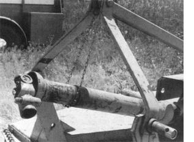
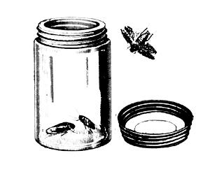
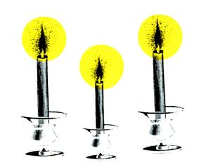
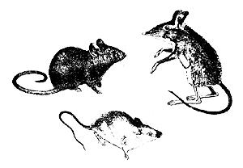
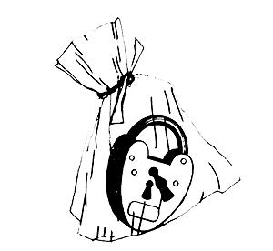

Help For The Handy
Hugh Williamson suggests not letting a power take-off drive lie in the mud; Thomas LaMance says electricians tape will adhere better in cold weather if heated before application; Len Crainer catches roaches in a jar with beer in the bottom; Danny Grantom suggests boiling water in a pan before boiling milk to prevent the milk from sticking and burning; Walter Korah demolished large boulders by heating them for several hours and pouring on cold water; Rebekah Kos uses oven cleaner to keep the glass door of her wood stove clean; Sandy Beadle keeps a candle and matches in the car to provide heat in case she gets snowed in; Gary Stender uses windshield washer fluid as household window cleaner; Timothy Fenby uses a nail and drill to remove stubborn bolts; R. J. Smith packs cracks with steel wool to keep mice from eating inside; Keith Flower prevents locks from corroding by keeping a plastic bag around them; Mrs. F.W. Brown discovered talcum power removes grease stains; Matthew Shelton uses a tung oil and mineral spirits mixture to restore luster to wood floors better than waxing; George Davis uses cat litter to remove oil spots from the garage floor; A. Keller freezes bacon to cook later; Janice Boyce cooks the bacon before freezing; Rick Powell rubs an onion half over his windshield the night before a big freeze, which makes frost removal easier the next morning; Ida Blaker ties a pillowcase over a broom's bristles when sweeping snow to preserve the broom; Howard Baker uses a flexible rubber hose to remove spark plugs.
January/February 1990
Tips to make lighter work of those heavy chores.
©HUGH F. WILLIAMSON
<< PTO shahs suffer more wear when not in use than they ever do while working. A little care will dramatically extend their useful lives.
MOST POWER TAKE-OFF (PTO) DRIVEshafts are left lying in the mud when the tractor or other such PTO-equipped machine is not in use. This causes rust and corrosion, which is totally u nnecessary, since a simple support can be made for the shaft with a length of lightweight chain fastened to the frame with S hooks, as shown in the accompanying photo.
Workshop Quartet
1) Electrician's tape will adhere better in cold weather if you hold the roll near a turnedon light bulb until the tape is slightly warm.
2) When you need to start a small nail in a hardto-reach spot, roll up a little ball of putty, stick it where you want to drive the nail, and insert the point of the nail in the putty. (The same trick will hold a screw to the tip of a screwdriver!)
3) Recycle an old telephone directory to your workbench, and tear off a page or two when you need a clean surface on which to paint, glue, or grease, etc.; then just throw the soiled paper away.
4) Wipe your steel measuring tape occasionally with paste wax; the tape will pull out and recoil more easily, and the wax protects the painted calibration marks. -Thomas LaMance Prewitt- New Mexico
They'll Die Happy
We're troubled by roaches here in the South, and I've found an effective, economical, and environmentally safe way to deal with them. I coat the top inch of a glass jar with vegetable oil and pour in three or four ounces of beer. I place this trap in one of those places where roaches love to hide, and I forget about it for two or three days. By this time I'll have a jarful of roaches; once attracted to the beer bait, they fall in and can't get back out over the oily barrier. I just put the lid on the jar, throw the whole thing out, and start over with another jar. This method sure beats smelly sprays and poisons.
-Len Crainer Marrero, Louisiana
Scorch-Free Pans
When cooking with milk, put a little water in the pan first, heat it to a boil, and then add the milk. This keeps the milk from burning or sticking to the pan.
-Danny Grantom Lansing, Kansas
Hot Rocks
When excavating for the foundation of my new home, I was stopped by several huge boulders protruding in the path of the dozer. I couldn't budge them, and after breaking a tooth off the bucket, I started going over alternatives. I wasn't willing to blast with explosives or use a jackhammer, so I used my head instead. I dug a little ditch all around each boulder, just deep enough to hold small chunks of firewood and broken-up dead branches. I started this burning, and to make a really hot fire, I added a thick layer of charcoal briquettes. After the rocks had heated for about five hours, several buckets of cold water dumped over the top of each one cracked them so completely that it took just a few blows with a sledgehammer to crumble away the remaining unwanted portions.
-Walter Korab Stroudsburg, Pennsylvania
A Clear View
One of the nicest features of our new woodstove was its glass door that let us watch the changing patterns of the fire. Soon, however, our view was obscured by creosote and soot. Glass cleaner was of little help, but we found that oven cleaner worked quickly and easily. It's so enjoyable to relax and watch the flames on a cold winter's night.
-Rebekah Kos Aumsville, Oregon
The combination-lock sandwich, a steel-wool rodent router, and more.
Sandy
Just in Case
A friend who experienced many Colorado winters once told me that one candle burning in a car will provide enough heat to keep a person from freezing if the car gets stuck in the snow. So now I keep candles, matches, and an empty shallow tin can (to hold a candle safely), as well as a blanket, in my car throughout the winter.
-Sandy
1. Beadle Ann Arbor, Michigan
I Do Windows
Windshield-washer fluid bought in gallon containers costs about a tenth as much per ounce as brand name household window and glass cleaners. And it works just as well. So every time I buy a jug of windshield cleaner for our trucks, I simply fill an empty spraytop bottle with it for use in the house.
-Gary Stender Custer, South Dakota
A Square Peg
So many times we home mechanics, when trying either to tighten a bolt or to remove one, twist it too much, causing it to break off flush with the surface it's screwed into. How to remove the rest of the bolt? When this happened to me, I carefully drilled a hole about two-thirds of the wa y down the center of the shank. For a 31s-inch-diameter bolt, I drilled a `/a-inch hole. Then I tapped a 10-penny, casehardened, square concrete nail into the hole, grasped it with an adjustable wrench, and turned out the nail and broken-off bolt at the same time. There's a commercial product that does the same thing, but it costs dollars rather than the pennies a nail costs, and the nail works almost as well.
-Timothy W. Fenby
Emmitsburg, Maryland
Rodent Resistant
To keep mice from getting into your home, pack all the cracks and crevices, especially the holes around gas and water pipes, with steel wool. It's a material mice won't even try to chew through.
-R.F. Smith Buckeye, Arizona
Lock Block
When padlocks are used outdoors, they tend to rust and corrode rather quickly. To prevent this, I place a clear plastic sandwich bag over each lock and secure it with a twist-tie. It takes only seconds to remove the bag to open keyed locks, and combination locks can often be worked right through the plastic.
-Keith Flower Provo, Utah
Onions against ice,baking bacon, and food for your hardwood floors .
Magic Powder
My mother always kept a small tin of talcum powder in the kitchen. When any grease splattered on her clothes, she would sprinkle a little talcum on the spots. After 20 or 30 minutes she brushed off the powder, and the spots were gone.
-Mrs. F W Brown Nairobi, Kenya
Moisturizer for Floors
For almost a decade my business has been caring for floors, and I've found the following technique to be really helpful when restoring wood flooring that is dried out and lifeless. Using a trigger sprayer, dilute one part tung oil with four parts mineral spirits. Very lightly mist the floor with this mixture as you buff: Paste wax can be applied immediately afterward, and it will buff up shinier and will last longer than if you use wax alone.
-Matthew Shelton
Atlanta, Georgia
Clever Cleanup
When faced with oily spots on the garage floor, I came across a bag of cat litter and decided to test its absorbent properties. I sprinkled on just enough to cover each spot, then applied a little pressure with my foot. I left the litter on the cement for two days before sweeping it up. It did a great job, was easy to use, didn't smell, and it was inexpensive too!
-George D. Davis Represa, California
Two Ways With Bacon
After buying bacon, I roll each strip up tightly; place the rolls on a baking sheet, and freeze them. They are then kept frozen in a plastic bag and can be cooked one or two at a time for individual portions.
-A. Keller Staten Island, New York I bake bacon on a broiler pan, with the drip pan lined with foil, in a 325 ° oven. This way the bacon needs no turning and little watching, and since I'm getting a pan dirty any way, I usually cook several pounds. It's a great way to cook bacon for a crowd, but if that's not the case, I take it out at the notquite-crisp stage and freeze it. The frozen strips don't stick together, so just a few can be easily crisped for a quick breakfast or a BLT sandwich.
-Janice Boyce Asheville, North Carolina
Icebreaker
When your car is parked outdoors all winter, that morning glaze of ice on the windshield is often hard to remove. Try cutting a large onion in half, and rub a cut side over the glass the night before a freeze. You'll be surprised how easily the ice comes off the next morning. Keep the onion in a plastic bag, and you can use it again and again.
-Rick Powell Corry, Pennsylvania
Clean Sweep
I tie a sack or an old pillowcase over the bristles when I use a broom to sweep snow off my walks. It works much better than a bare broom, and the bristles stay dry and last a lot longer too.
-Ida M. Blaker Bradley Beach, New Jersey
Rubber Reach
To replace spark plugs in an engine-in my car or chain saw, for example-I use a short length of flexible rubber hose (or tubing) with an interior diameter small enough to fit snugly over the end of the spark plug after its wire is removed. Using the hose as a handle keeps me from burning my fingers and knuckles on hot engines and makes it easier to start the plugs in hard-to-reach places.
-Howard Baker
Rifle, Colorado
Through the years we've all discovered a few practical, time-tested solutions to some of the frustrating little problems of everyday life. Send your own suggestions to Country Lore,Mother Earth News, P.O.Box 70, Hendersonville, NC 28793. Each contributor whose tip is printed in this column will receive $20.
|
 HUGH F. WILLIAMSON,Tuscon,Arizona |
 |
 |
|
 |
 |
 |